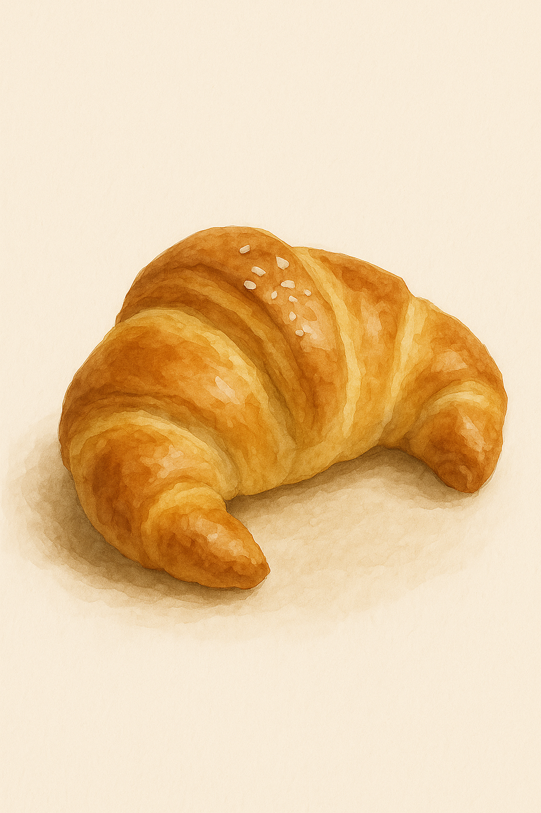
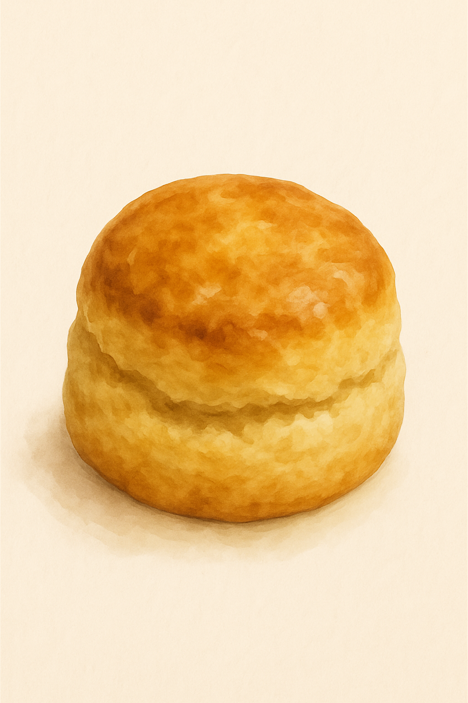

咔咔小段
這款傳統義大利脆餅，帶著淡淡的杏仁香氣與紮實口感，是午後一杯咖啡的最佳伴侶。酥脆的口感中藏著堅果的溫潤，細細咀嚼，每一口都讓時光慢了下來，靜靜感受生活的節奏與餘韻。

小彎鹽
外層酥香、內裡鬆軟的小彎鹽，是每天限量現烤的法式鹽可頌。黃金層次中帶著奶油香與鹽粒的輕盈點綴，入口後微鹹與濃郁交織，是最簡單也最耐吃的幸福味道。

松松球
蓬鬆厚實、帶有溫潤奶香的英式司康，適合配著一口茶，一起細細咀嚼。外酥內嫩的松松球，是給午後留白的一個好理由。搭配果醬或奶油各有風味，也可以簡單回烤，享受最純粹的烘焙質感。

慢圈圈
悠閒的午後時光，咬下一口烤得恰到好處的貝果，蔓越莓帶來微酸果香，起司濃郁滑順，口口都有不同驚喜。不論是獨自享用，或與好友分享，這份手作的溫度總能在日常中，悄悄填滿心的空白。